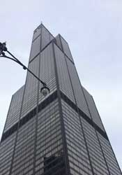
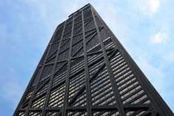
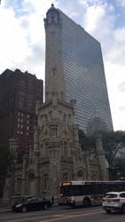
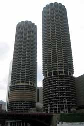

Architecture
Chicago is the home of the first sky scrapers and home of unique architectural styles. Chicago is one of the leading city in the world by architectural styles and innovations. There are a lot of iconic buildings in downtown Chicago that attract tourists. Mainly Sears/Willis Tower, John Hancock, Water Tower, Wrigley Building, Tribune Tower, Marina City and Civic Opera are some of the iconic buildings that are known by its architectural designs.

Willis Tower
Willis Tower, it’s former name is Sears Tower was the tallest building in the world for almost 25 years from 1973 to 1998. It is located at 233 S. Wacker Drive Chicago, IL 60606. The building has a lot of amazing structural designs that influences the world’s architectural innovations. You should visit the sky deck that gives you the view of the whole Chicago city.

John Hancock Center
John Hancock Center is located at 975 N. Michigan Ave, Chicago, IL 60611. It is also known as 360 CHICAGO observation deck, located 1000 feet above the famed Magnificent Mile that offers breathtaking 360 degrees views of the city skyline and Lake Michigan. 360 Chicago observation deck is also home of TILT – Chicago’s highest thrill ride – an enclosed moving platform that literally tilts you out over Michigan Avenue from the 94th Floor.
 
Water Tower
Water Tower is the only public building in the burned zone to survive from the Great Chicago Fire, and is one of the surviving structures still standing. In the years since the fire, the tower has become a symbol of old Chicago and of the city's recovery from the Great Fire.Marina city
Marina City (on the left) is a mixed-use complex along the main branch of the Chicago River in downtown Chicago.
Chicago has many interactive learning opportunities on the city’s rich history, colorful neighborhoods and its iconic architecture, along with a modern Bar and Café where you can relax and enjoy the best views of the city; 360 CHICAGO and Sky Deck are the perfect place to enjoy an unforgettable experience.